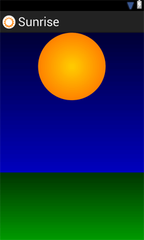
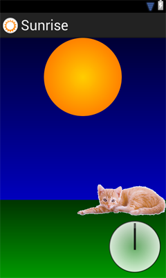

/* Моя кошка замечательно разбирается в программировании. Стоит мне объяснить проблему ей - и все становится ясно. */
John Robbins, Debugging Applications, Microsoft Press, 2000

/* Моя кошка замечательно разбирается в программировании. Стоит мне объяснить проблему ей - и все становится ясно. */
John Robbins, Debugging Applications, Microsoft Press, 2000
Статичный контент не очень интересен. Гораздо интереснее создавать различные анимационные эффекты, которые привлекут внимание пользователя.
В Android доступны несколько видов анимации, которым отведён отдельный раздел Анимация. Мы рассмотрим один из видов для ознакомления.
В этом уроке мы будем использовать анимацию из фигур, создав иллюзию восхода солнца. Также добавим анимацию аналоговых часов. Будет интересно!
Создадим новый проект под названием Sunrise (Восход солнца).
Сначала нарисуем солнце. Создадим новую папку drawable в папке res. Далее в созданной папке создадим новый файл sun.xml следующего содержания:
<?xml version="1.0" encoding="utf-8"?>
<shape xmlns:android="http://schemas.android.com/apk/res/android"
android:dither="true"
android:shape="oval" >
<gradient
android:endColor="#ffff6600"
android:gradientRadius="150"
android:startColor="#ffffcc00"
android:type="radial"
android:useLevel="false" />
<size
android:height="150dp"
android:width="150dp" />
</shape>
Для изображения солнца мы использовали фигуру Овал с одинаковыми размерами, чтобы получить "солнечный круг". Чтобы рисунок солнца получился красивым, применим к нему градиент (плавное изменение цвета) от тёмно-жёлтого к светло-жёлтому.
Далее нарисуем "небо вокруг". В той же папке drawable создадим новый файл sky.xml следующего содержания:
<?xml version="1.0" encoding="utf-8"?>
<shape xmlns:android="http://schemas.android.com/apk/res/android"
android:dither="true"
android:shape="rectangle" >
<gradient
android:angle="90"
android:endColor="#ff000033"
android:startColor="#ff0000ff" />
</shape>
Мы задали фигуру в виде прямоугольника с голубым градиентом от нижнего края к верхнему.
Мальчишка нарисовал солнце, небо и подписал в уголке четыре строчки опять про солнце, небо, а также про маму и про себя. А про кота он совсем забыл. Ладно, не будем обращать внимания на глупого мальчика, а обратимся к другой песне, где зайцы косили (!!!) трын-траву. Видимо у автора неплохая травка была. Но слов из песни не выкинешь - нарисуем траву. Создаём файл grass.xml в уже знакомой папке:
<?xml version="1.0" encoding="utf-8"?>
<shape xmlns:android="http://schemas.android.com/apk/res/android"
android:dither="true"
android:shape="rectangle" >
<gradient
android:angle="90"
android:endColor="#ff003300"
android:startColor="#ff009900" />
</shape>
Особо изощряться не будем, а нарисуем зелёный прямоугольник с градиентом, тем более я не знаю, как выглядит трава, скошенная зайцами.
Настало время собирать камни, простите, фигуры. Для начала откроем файл strings.xml в папке res/values и добавим несколько строковых ресурсов:
<string name="sun">Солнце</string>
<string name="grass">Трава</string>
<string name="sky">Небо</string>
<string name="clock">Часы</string>
<string name="hour">Стрелка</string>
Откроем разметку главной активности activity_main.xml и добавим в неё несколько элементов ImageView:
<RelativeLayout xmlns:android="http://schemas.android.com/apk/res/android"
xmlns:tools="http://schemas.android.com/tools"
android:layout_width="match_parent"
android:layout_height="match_parent"
android:paddingBottom="@dimen/activity_vertical_margin"
android:paddingLeft="@dimen/activity_horizontal_margin"
android:paddingRight="@dimen/activity_horizontal_margin"
android:paddingTop="@dimen/activity_vertical_margin"
tools:context=".MainActivity" >
<ImageView
android:id="@+id/sky"
android:layout_width="fill_parent"
android:layout_height="fill_parent"
android:contentDescription="@string/sky"
android:src="@drawable/sky" />
<ImageView
android:id="@+id/sun"
android:layout_width="wrap_content"
android:layout_height="wrap_content"
android:layout_centerHorizontal="true"
android:contentDescription="@string/sun"
android:scaleType="fitCenter"
android:src="@drawable/sun" />
<ImageView
android:id="@+id/grass"
android:layout_width="fill_parent"
android:layout_height="150dp"
android:layout_alignParentBottom="true"
android:contentDescription="@string/grass"
android:src="@drawable/grass" />
</RelativeLayout>
У всех элементов ImageView в атрибуте android:src мы прописали созданные фигуры, которые теперь можно видеть на экране.

Напомню, что мы собирались делать анимацию, а не рисунок. Поэтому продолжим урок. Нужно, чтобы солнце поднималось в верхнюю часть экрана. Создадим новую папку res/anim, в которой будут находиться файлы анимации.
Создадим в созданной папке новый файл sun_rise.xml:
<?xml version="1.0" encoding="utf-8"?>
<set xmlns:android="http://schemas.android.com/apk/res/android"
android:duration="5000"
android:fillAfter="true"
android:interpolator="@android:anim/accelerate_decelerate_interpolator"
android:shareInterpolator="false" >
<scale
android:fromXScale="1.0"
android:fromYScale="1.0"
android:pivotX="50%"
android:pivotY="50%"
android:toXScale="1.5"
android:toYScale="1.5" />
<translate
android:fromYDelta="80%p"
android:toYDelta="10%p" />
<alpha
android:fromAlpha="0.3"
android:toAlpha="1.0" />
</set>
В блоке set мы установили детали анимации. Например, параметр android:duration показывает, что анимация должна совершиться в течение 5 секунд. Параметр fillAfter управляет состоянием анимации - она не должна прыгать в начало. Параметр android:interpolator использует системную константу для небольшого ускорения от начала к середие анимации и торможения от середины к концу анимации.
Внутри блока set устанавливаются специальные блоки, отвечающие за характер анимации: изменение размеров, позиции и прозрачности.
Например, фигура солнца по нашей задумке будет увеличиваться от своего изначального размера в полтора раза, раздуваясь равномерно от своей середины (scale).
Элемент translate двигает солнце по экрану вертикально вверх. Мы отталкиваемся относительно родительского элемента, используя суффикс "p". Солнце начинает движение в позиции 80% от родительского элемента по оси Y и заканчивает движение в позиции 10%.
При движении также меняется прозрачность солнца от полной прозрачности до полной непрозрачности (alpha).
Переходим непосредственно к программированию.
package ru.alexanderklimov.sunrise;
import android.os.Bundle;
import android.app.Activity;
import android.view.Menu;
import android.view.animation.Animation;
import android.view.animation.AnimationUtils;
import android.widget.ImageView;
public class MainActivity extends Activity {
@Override
protected void onCreate(Bundle savedInstanceState) {
super.onCreate(savedInstanceState);
setContentView(R.layout.activity_main);
// Получим ссылку на солнце
ImageView sun = (ImageView) findViewById(R.id.sun);
// Анимация для восхода солнца
Animation sunRise = AnimationUtils.loadAnimation(this, R.anim.sun_rise);
// Подключаем анимацию к нужному View
sun.startAnimation(sunRise);
}
}
Запускаем проект и любуемся восходом солнца.
Добавим к проекту часы с анимацией. Создадим в папке res/drawable файл clock.xml:
<?xml version="1.0" encoding="utf-8"?>
<layer-list xmlns:android="http://schemas.android.com/apk/res/android" >
<item>
<shape
android:dither="true"
android:shape="oval" >
<gradient
android:endColor="#ffffffff"
android:gradientRadius="100"
android:startColor="#66ffffff"
android:type="radial"
android:useLevel="false" />
<size
android:height="100dp"
android:width="100dp" />
<stroke
android:width="2dp"
android:color="#99000000" />
</shape>
</item>
<item
android:bottom="44dp"
android:left="48dp"
android:right="48dp"
android:top="5dp">
<shape android:shape="rectangle" >
<solid android:color="#99000000" />
</shape>
</item>
</layer-list>
Создадим в папке res/anim файл clock_turn.xml для анимации часов:
<?xml version="1.0" encoding="utf-8"?>
<set xmlns:android="http://schemas.android.com/apk/res/android"
android:duration="5000"
android:fillAfter="true"
android:interpolator="@android:anim/linear_interpolator"
android:shareInterpolator="false" >
<rotate
android:fromDegrees="0"
android:pivotX="50%"
android:pivotY="50%"
android:toDegrees="720" />
</set>
В анимации мы указали значение 720 градусов, чтобы часы сделали полный оборот два раза. Хотя вращается вся фигура, для пользователя будет казаться, что вращается только стрелка.
Добавим в разметку новый ImageView для часов:
<ImageView
android:id="@+id/clock"
android:layout_width="wrap_content"
android:layout_height="wrap_content"
android:layout_alignParentBottom="true"
android:layout_alignParentRight="true"
android:contentDescription="@string/clock"
android:padding="10dp"
android:src="@drawable/clock" />
Теперь необходимо добавить код для анимации часов:
// Получим ссылку на часы
ImageView clock = (ImageView) findViewById(R.id.clock);
// анимация для вращения часов
Animation clockTurn = AnimationUtils.loadAnimation(this, R.anim.clock_turn);
clock.startAnimation(clockTurn);
Запустите проект, чтобы проверить, что всё работает.
Сейчас у часов одна минутная стрелка. Давайте добавим ещё часовую стрелку. Создаём файл hour_hand.xml в папке res/drawable:
<?xml version="1.0" encoding="utf-8"?>
<layer-list xmlns:android="http://schemas.android.com/apk/res/android" >
<item>
<shape
android:dither="true"
android:shape="oval" >
<solid android:color="#00000000" />
<size
android:height="100dp"
android:width="100dp" />
</shape>
</item>
<item
android:bottom="44dp"
android:left="48dp"
android:right="48dp"
android:top="15dp">
<shape android:shape="rectangle" >
<solid android:color="#99000000" />
</shape>
</item>
</layer-list>
Основные отличия от предыдущего файла - прозрачный круг и более короткая стрелка. При наложении на часы с минутной стрелкой, мы увидим часовую стрелку, а прозрачный круг мешать не будет.
Снова добавляем ImageView в разметку для часовой стрелки:
<ImageView
android:id="@+id/hour_hand"
android:layout_width="wrap_content"
android:layout_height="wrap_content"
android:layout_alignParentBottom="true"
android:layout_alignParentRight="true"
android:contentDescription="@string/clock"
android:padding="10dp"
android:src="@drawable/hour_hand" />
Компонент должен находиться в той же позиции, что и часы.
Создаём анимационный файл hour_turn.xml в папке res/anim:
<?xml version="1.0" encoding="utf-8"?>
<set xmlns:android="http://schemas.android.com/apk/res/android"
android:duration="5000"
android:fillAfter="true"
android:interpolator="@android:anim/linear_interpolator"
android:shareInterpolator="false" >
<rotate
android:fromDegrees="180"
android:pivotX="50%"
android:pivotY="50%"
android:toDegrees="240" />
</set>
Начальная позиция установлена в значении 180 градусов, что соответствует 6 часам. При анимации стрелка повернётся на 60 градусов и будет соответствовать 8 часам. За это время минутная стрелка сделает два полных оборота, что соответствует двум часам (8-6).
Добавим анимацию в код:
// получим ссылку на часовую стрелку
ImageView hour = (ImageView) findViewById(R.id.hour);
// анимация для стрелки
Animation hourTurn = AnimationUtils.loadAnimation(this, R.anim.hour_turn);
// присоединяем анимацию
hour.startAnimation(hourTurn);
— А где коты? - завопил мой кот Рыжик, внимательно следивший за созданием проекта. Ладно, добавим кота.
Как добавлять котов, объяснять не буду. Сами сообразите.

Запускаем проект и наблюдаем за анимацией. Получилось красиво, мне нравится.
Простите за качество видео. Снимал с рук с телефона на мониторе. И кот дергал за руку, грозно спрашивая, где коты?
Урок создан по мотивам статьи Creating a Simple Tween Animation